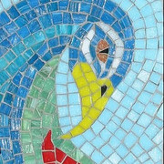
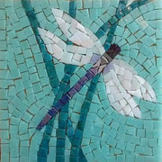

The white swan mosaic uses ceramic tiles to depict the internal battles that exist within human beings. The swan appears from blue waters and dying green reeds while carrying deep emotional layers. The bird's curved neck along with her stable posture shows deep sadness yet the white ceramic tiles present both dark aspects and strength. The black feathers that penetrate her white tile surface represent the hidden emotional damage she has endured. Personal pain transforms into an elaborate visual depiction of emotional depth through the specific mosaic method that acts as a representation of human ego layers and personality traits.
Reincarnation
2023
Ceramic tiles, glass mosaic pieces
Through its colorful composition the peacock mosaic depicts the multi-faceted process of changing perceptions of oneself. The artwork displays golden-covered feathers to express a deeply personal journey of rebirth. The peacock's highest point extends outward to show its need for outside recognition and social approval. The artist reveals her inner struggle to love and accept herself through this colorful artwork. The fragmented tiles symbolize brief attempts at self-transformation which were motivated by external expectations instead of authentic self-realization. The mosaic becomes a vulnerable meditation on the challenging path of personal growth and the complex dynamics of self worth.


Enlightenment
2023
Ceramic tiles
The intricate dragonfly mosaic illustrates the climactic experience of liberation a person achieves. The artist displays the dragonfly in mid-air above a peaceful turquoise surface to convey its deep story of self-discovery. The artwork uses ceramic and glass tiles to create its fractured design which represents the intricate nature of personal development. The white and light tiles that form the dragonfly wings create a transparent effect which symbolizes freedom. Through this work the artist masterfully illustrates the crucial moment of escaping societal pressures as a celebration of self-love. The artist's personal liberation emerges through the dragonfly which represents their own development while its wings extend fully to symbolize complete freedom.
This curation represents a deeply personal journey through transformation, growth, and self-discovery, expressed through the medium of mosaic art. The three works—Turmoil, Reincarnation, and Enlightenment—chart a path of emotional and psychological evolution, from the internal battles symbolized by the swan in Turmoil, to the rebirth and self-reflection found in the peacock of Reincarnation, and finally, the liberation embodied by the dragonfly in Enlightenment. These pieces reveal my ongoing exploration of personal development, grappling with external pressures, and ultimately finding self-acceptance and freedom.
As a writer, content creator, and student, these works reflect my fascination with human emotions and the complexity of individual growth. They show how I interact with both personal experiences and broader societal influences, integrating different perspectives and ideas into my work. The mosaic method, with its use of ceramic tiles and glass fragments, represents the fractured, multifaceted nature of identity, offering a space where visual and tactile modes of expression combine with the linguistic and conceptual layers of self-reflection.
Over time, my engagement with others’ ideas has evolved from a focus on external validation to a deeper understanding of self-realization. My portfolio highlights how I’ve developed as a thinker and creator, emphasizing the importance of introspection, authenticity, and transformation in both my artistic and academic endeavors. These works are more than just artifacts—they are a testament to my ongoing journey as a writer and a person.